Pečky · Středočeský kraj · okres Kolín
Radnice, kterou lze přečíst
Přehled samosprávy města Pečky — kdo město vede, jak je rozdělené zastupitelstvo a za co radnice utrácí. Sestaveno z veřejně dostupných zdrojů, na jednom místě.
- Status
- Město (od 1925), předtím městys od 1879
- První zmínka
- 1225, darovací listina Přemysla Otakara I.
- Části obce
- Pečky (4 195 ob.) · Velké Chvalovice (539 ob.)
- Obyvatel
- 4 874 (k 1.1.2025)
- Rozloha
- 10,76 km²
- Řeka
- Výrovka
- Starosta
- Milan Paluska
- ORP
- Pečky — spravuje i Cerhenice, Dobřichov, Chotutice, Plaňany, Radim, Ratenice, Vrbčany
sources.json v repozitáři projektu.
Jak se řídí město
Lidé, kteří řídí město
Město řídí dvě propojené skupiny. Zastupitelstvo je 21členný sbor, který si občané volí přímo v komunálních volbách jednou za čtyři roky — má poslední slovo v zásadních otázkách jako rozpočet nebo majetek města. Zastupitelstvo si pak ze svého středu zvolí radu, menší výkonný tým, který řídí každodenní chod úřadu mezi jednotlivými zasedáními. Níž se dozvíš, kdo v nich sedí a o čem přesně rozhodují.
Rada města (7)


Ostatní členové zastupitelstva (14)
Bez funkce v radě — rozložení mandátů níže na této stránce, výsledky voleb v sekci Volby.


Komunální volby 23.–24. 9. 2022
Volby 2022 do zastupitelstva
Poslední komunální volby v Pečkách proběhly 23.–24. září 2022, účast byla 52,36 %. Kandidovalo šest uskupení, pět z nich získalo mandát. Níže jsou všechna uskupení s výsledky a shrnutím jejich volebního programu. ověřeno
Volební programy - aneb co kdo sliboval
Shrnutí volebních programů z inzertních stran Pečeckých novin 9/2022 (vydání těsně před volbami), doplněno o oficiální kandidátku ODS. Plné znění viz odkaz u každého uskupení.
- Soběstačnost a rozvoj: úpravna vody, fotovoltaika a komunitní energetika, víc zeleně, územní plán jižní části města, parkování.
- Klíčové projekty: obchvat, tělocvična, opravy Tř. 5. května a chodníků, oživení náměstí, úprava hřbitova.
- Péče o občany: jesle, obecní bydlení, veřejné WC, modernizace zdravotního střediska, bezbariérová podatelna, sobotní úřední hodiny, bezpečnost.
- Vzdělání, kultura, sport: přístavba ZŠ, fotbalové kabiny, rekonstrukce kulturního domu, knihovna, diskgolf a pumptrack.
Nezveřejnilo jednotný bodový program — inzerce ukazuje portréty kandidátů s krátkými hesly, mj. k těmto tématům:
- Investice do provozu města
- Bezpečnost
- Podpora sportu
- Vzdělávání dětí
Text hesel je z fotomozaiky strojově málo čitelný, ověřitelný jen z originálu PDF.
Zdroj: Pečecké noviny 9/2022, PDF str. 9 ↗ · kandidátka na ods.cz ↗
- Pokračování jednání o obchvatu města
- Řešení parkování
- Výstavba obecních nebo družstevních bytů
- Podpora podnikání a drobných podnikatelů
- Řešení obslužnosti Velkých Chvalovic
- Navýšení stavu městské policie
- Podpora rozšíření zdravotní péče
- Ochrana vodního zdroje
- Dostavba a modernizace ZŠ a MŠ
- Podpora sportovních oddílů a odpočinkových míst
- Oprava jedné ulice v každé části města ročně
- Zdravotní a sociální: nový pečovatelský dům s hospicem, bezbariérovost, rehabilitační centrum s bazénem, rozšíření ordinací specialistů.
- Sport a vzdělávání: revitalizace myslivny a bažantnice, myslivecký kroužek, obnova Skautu/Junáka/Sokola, „kopečkové hřiště".
- Bezpečnost: městská policie 24/7, nové přechody.
- Životní prostředí: ochrana dřevin, remízky, nechemická likvidace plevele.
- Rozvoj města: revitalizace jižní části, oprava fontány, obnova pramene Poděbradky, nové bytové jednotky, úprava Barákovy a Třebízského ulice, parkoviště u lékárny.
- Odpovědně provést město počínající ekonomickou krizí
- Hospodařit s prostředky města odpovědně
- Soustředit se na realizovatelné projekty
- Opravovat ulice a chodníky rovnoměrně — Pečky jih, sever i Velké Chvalovice
- Navázat na Strategický plán města
- Podporovat sport, kulturu a spolky
- Udržet zdravotní a sociální služby
- Podporovat místní podnikatele a nové bydlení
- Racionalizovat Pečecké služby
- Udržet letní tábor v Hryzelích
- Vybudovat veřejné WC
- Opravit hřbitov
- Nedopustit prodej vodovodu a kanalizace
- Podpora zájmových, kulturních a volnočasových spolků
- Opravy chodníků s bezbariérovými úpravami
- Lavičky, odpadkové koše a veřejné WC
- Obnova tradice pečeckého skautu
- Více míst ve školce, vznik městských jeslí
- Bezpečná a hlídaná dětská hřiště
- U-rampa, Street Workout hřiště a pumptrack
- Rozšíření obytných zón kvůli dopravní bezpečnosti
- Rozšíření otevírací doby pošty
- „Rozumné" dořešení obchvatu
- Péče o hřbitov včetně autobusové zastávky
Společná témata a shoda mezi uskupeními
Šest uskupení kandidovalo s odlišnými akcenty, ale řada bodů se v programech opakuje napříč politickým spektrem — od okrajových stran po vítěze i budoucí vedení radnice. Přehled ukazuje, kolik uskupení mělo dané téma ve svém programu.
| Téma | Kolik uskupení | Která |
|---|---|---|
| Sport a volný čas | 6 z 6 | úplně všechna uskupení |
| Bezpečnost a městská policie | 5 z 6 | všechna kromě ČSSD a sjednocené levice |
| Bydlení (obecní/družstevní byty) | 4 z 6 | NAŠE PEČKY, SNK Pečky Pečákům, Lidé pro Pečky SPD, ČSSD a sjednocená levice |
| Opravy chodníků a ulic | 4 z 6 | NAŠE PEČKY, SNK Pečky Pečákům, ČSSD a sjednocená levice, Lidovci a nezávislí |
| Zdravotní péče | 4 z 6 | NAŠE PEČKY, SNK Pečky Pečákům, Lidé pro Pečky SPD, ČSSD a sjednocená levice |
| Obchvat města | 3 z 6 | NAŠE PEČKY, SNK Pečky Pečákům, Lidovci a nezávislí |
| Veřejné WC | 3 z 6 | NAŠE PEČKY, ČSSD a sjednocená levice, Lidovci a nezávislí |
| Péče o hřbitov | 3 z 6 | NAŠE PEČKY, ČSSD a sjednocená levice, Lidovci a nezávislí |
| Parkování | 3 z 6 | NAŠE PEČKY, SNK Pečky Pečákům, Lidé pro Pečky SPD |
| Školky a jesle | 3 z 6 | NAŠE PEČKY, SNK Pečky Pečákům, Lidovci a nezávislí |
Výsledek - aneb jak to dopadlo
| Uskupení | Podíl | Mandátů | Výsledek |
|---|---|---|---|
| NAŠE PEČKY (STAN + nezávislí) | 30,29 % | 7 | opozice Vítěz voleb, nicméně skončili v opozici, nemají zastoupení v radě. |
| Sdružení ODS a nezávislých kandidátů | 27,67 % | 6 | koalice Uzavřeli koalici se SNK Pečky Pečákům a ČSSD a sjednocenou levicí a jsou ve vedení radnice. |
| SNK Pečky Pečákům | 16,18 % | 3 | koalice Uzavřeli koalici s ODS a NK a ČSSD a sjednocenou levicí a jsou ve vedení radnice. |
| Lidé pro Pečky s podporou SPD | 13,94 % | 3 | opozice Skončili v opozici, nemají zastoupení v radě. |
| ČSSD a sjednocená levice | 8,29 % | 2 | koalice Uzavřeli koalici s ODS a NK a SNK Pečky Pečákům a jsou ve vedení radnice. |
| Lidovci a nezávislí | 3,62 % | 0 | bez zastupitelstva Vůbec se nedostali do zastupitelstva. |
Ve volbách bylo zapsáno 3 669 voličů, z nichž 1 921 odevzdalo obálku s hlasy — volební účast tak dosáhla 52,36 %.
Povolební koalice: proč vítěz voleb není v radě
Volby 2022 s přehledem vyhrálo uskupení NAŠE PEČKY (30,29 % hlasů, 7 z 21 mandátů — viz sekce Výsledky voleb). Přesto nemá v sedmičlenné radě ani jedno křeslo. Vysvětlení není žádná anomálie ani chyba — je to důsledek toho, jak české obecní zřízení volbu vedení obce konstruuje.
| Volba | Pro | Proti | Zdržel se |
|---|---|---|---|
| Starosta — Milan Paluska | 13 | 6 | 2 |
| 1. místostarosta — Zdeněk Fejfar | 15 | 3 | 3 |
| 2. místostarosta — Martin Jedlička | 14 | 5 | 2 |
| Radní — Karel Krištoufek | 14 | 6 | 1 |
| Radní — Hana Kuprová | 16 | 2 | 3 |
| Radní — Ivana Trčková | 15 | 2 | 4 |
| Radní — Petr Dürr | 14 | 4 | 3 |
Historické srovnání: jak silná byla podpora starostů dřív
ČSÚ eviduje jen výsledky voleb (hlasy a mandáty stran), ne jmenovité hlasování zastupitelstva o starostovi — to je v zápisech z ustavujících zasedání, které má Pečky digitalizované v systému usneseni.cz až od dubna 2021. Pro roky 2014 a 2018 proto přesný poměr hlasů pro/proti/zdržel se nikde online nedohledáme; z dobového tisku se ale dá zjistit, jak silná byla povolební koalice.
| Rok | Starosta/ka | Uskupení | Síla koalice |
|---|---|---|---|
| 2014 | Milan Urban | ODS a nezávislí | 8 z 21 mandátů (vítěz voleb), k většině 11 potřeboval dalšího koaličního partnera — dobový tisk přesné složení neuvádí |
| 2018 | Alena Švejnohová | SNK Naše Pečky | 13 z 21 mandátů (SNK Naše Pečky 9 + Pečky Pečákům 2 + ČSSD 2) |
| 2022 | Milan Paluska | ODS a NK | 11 z 21 mandátů (ODS a NK 6 + SNK Pečky Pečákům 3 + ČSSD a sjednocená levice 2), volba starosty 13 pro / 6 proti / 2 se zdrželi |
Volební účast stoupá
Komunální volby mají v Česku dlouhodobě jednu z vyšších účastí ze všech typů voleb — mezi lety 2014 a 2022 se celostátní průměr pohyboval od 44,46 % do 47,34 %, výrazně nad senátními volbami (10–20 %) nebo volbami do Evropského parlamentu (18,2 % v roce 2014). Podle Wikipedie je hlavním důvodem to, že lidé v komunálních volbách často osobně znají kandidáty, o kterých rozhodují. V Pečkách navíc účast od roku 2014 soustavně roste a v posledních dvou volbách už znatelně převyšuje celostátní průměr.
| Rok | Účast v Pečkách | Průměr ČR |
|---|---|---|
| 2014 | 40,80 % | 44,46 % |
| 2018 | 48,81 % | 47,34 % |
| 2022 | 52,36 % | 46,07 % |
Komunální volby 9.–10. 10. 2026
Volby 2026 do zastupitelstva
Příští komunální volby v Pečkách se konají 9.–10. října 2026. Výsledky, kandidátní listiny a volební programy uskupení doplníme na tuto stránku, jakmile budou k dispozici — stejně jako u voleb 2022. sledujeme
Archiv jednání · usneseni.cz
Jednání a usnesení
Kompletní strojově čitelný archiv veřejných jednání rady a zastupitelstva města Pečky — pozvánky, zápisy a jednotlivá usnesení včetně výsledků hlasování, texty verbatim bez úprav. ověřeno
Načítám archiv…
Registr smluv · zákon 340/2015 Sb.
Smlouvy
Registr smluv eviduje smlouvy, které veřejné instituce uzavírají za peníze daňových poplatníků. Data pro skupinu Město Pečky sbírá a strukturuje Hlídač státu; níže je výřez získaný přes připojený konektor Hlídače státu. ověřeno
Nejnovější smlouvy
| Datum podpisu | Předmět | Protistrana | Částka |
|---|---|---|---|
| 23. 7. 2026 | Pečovatelská služba — dotace na sociální služby (Humanitární fond) | Středočeský kraj | 1 100 000 Kč |
| 23. 7. 2026 | Pečovatelská služba — dotace na sociální služby (Humanitární fond) | Středočeský kraj | 400 000 Kč |
| 15. 7. 2026 | Pečovatelská služba — dodatek č. 2, dofinancování sociální služby | Středočeský kraj | 670 600 Kč |
| 1. 6. 2026 | ZŠ Pečky — Fond prevence 2026, dotace | Středočeský kraj | 190 000 Kč |
| 12. 5. 2026 | Pečovatelská služba — dodatek k dotaci na sociální službu 2026 | Středočeský kraj | 6 902 700 Kč |
| 15. 4. 2026 | ZŠ Pečky — dotace na projekt rozvoje venkova | Státní zemědělský intervenční fond | 800 000 Kč |
| 1. 4. 2026 | Organizování veřejné služby SKO-VS-2/2026 | Úřad práce ČR | bez ceny |
| 16. 3. 2026 | Pečovatelská služba — dotace na sociální službu 2026 | Středočeský kraj | 1 735 700 Kč |
Největší smlouvy v registru (celá skupina)
| Datum | Předmět | Protistrana | Částka |
|---|---|---|---|
| 4. 2. 2021 | Darování hasičského vozidla NA MB Atego | HZS Středočeského kraje | 9 322 779 Kč |
| 10. 9. 2024 | Podpora ze Státního fondu životního prostředí | SFŽP ČR | 8 605 336 Kč |
| 12. 5. 2026 | Pečovatelská služba — dodatek k dotaci na sociální službu | Středočeský kraj | 6 902 700 Kč |
| 20. 3. 2025 | Pečovatelská služba — dotace na sociální službu 2025 | Středočeský kraj | 6 294 100 Kč |
| 20. 3. 2023 | Pečovatelská služba — dotace na sociální službu 2023 | Středočeský kraj | 3 399 400 Kč |
| 16. 11. 2023 | Podpora ze Státního fondu životního prostředí | SFŽP | 2 719 775 Kč |
| 10. 6. 2021 | Bezúplatný převod motorového vozidla | HZS hl. m. Prahy | 2 344 834 Kč |
| 18. 11. 2025 | Věcné břemeno a umístění stavby | ČEZ Distribuce |
| 30. 12. 2022 | Dodatek č. 1 ke smlouvě o ubytování | Středočeský kraj |
| 3. 11. 2021 | Dodatek — rozdíl ceny bezpečnostního vybavení | HZS hl. m. Prahy |
| 12. 7. 2021 | Právní služby při založení družstva (společně s okolními obcemi) | Město Český Brod |
| Zdroj | Co obsahuje | |
|---|---|---|
| Hlídač státu — profil Města Pečky | plný přehled smluv, dotací, rizik a dodavatelů | otevřít ↗ |
| smlouvy.gov.cz — oficiální registr smluv | plné znění smluv se subjektem Město Pečky | otevřít ↗ |
Měsíčník města
Pečecké noviny
Pečecké noviny jsou informační měsíčník města — vychází měsíčně (mimo prázdninové dvojčíslo červenec–srpen) v nákladu cca 1 000 kusů, redakci vede Alena Brantová (noviny@pecky.cz). Archiv 2020–2026, 68 vydání, je zrcadlený z pecky.cz se všemi odkazy na PDF. ověřeno
Fulltextové hledání v obsahu
Text vyextrahovaný ze všech vydání, hledá se bez ohledu na diakritiku a velikost písmen, napříč jednotlivými stránkami.
Načítám archiv textu…
2026


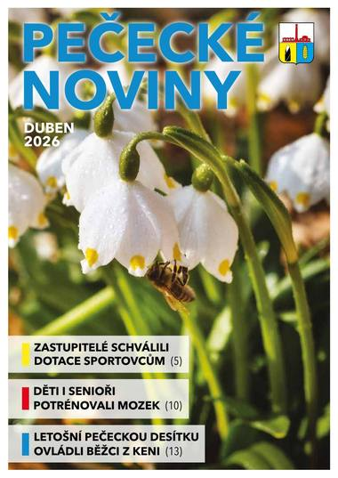
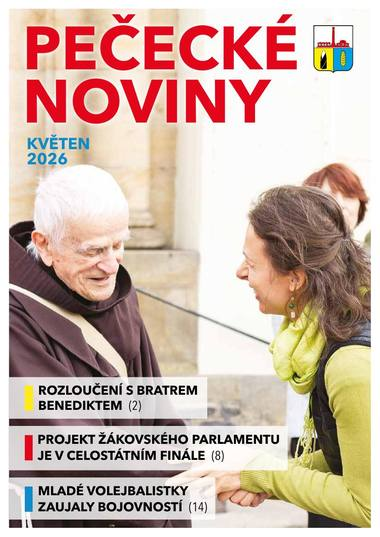

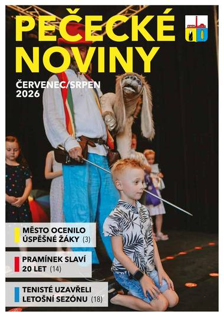
2025


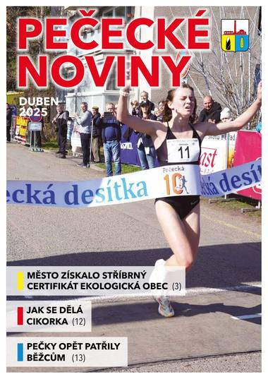

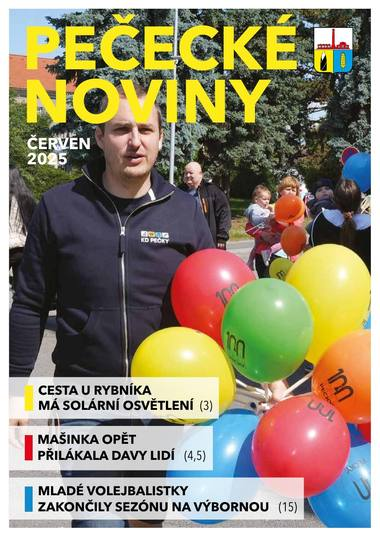
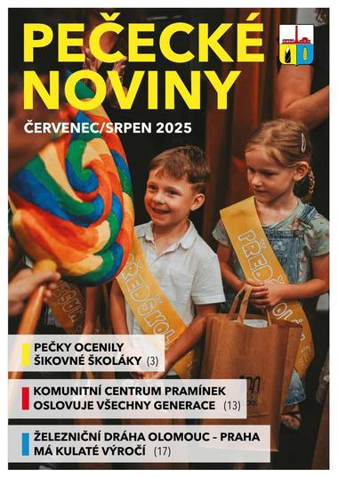

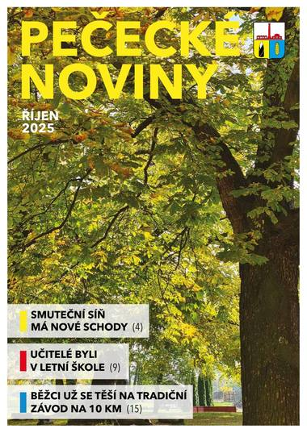

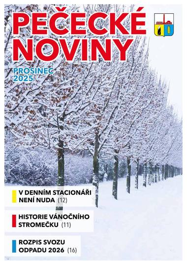
2024


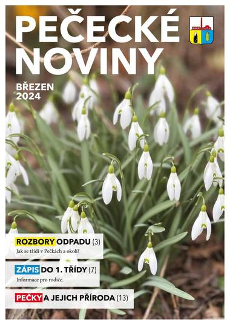

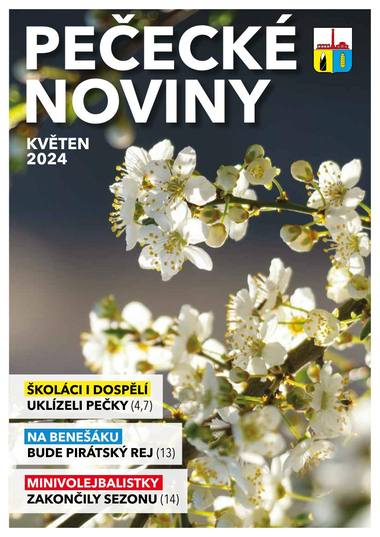

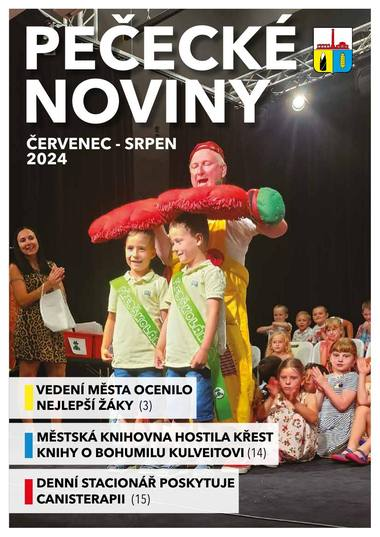

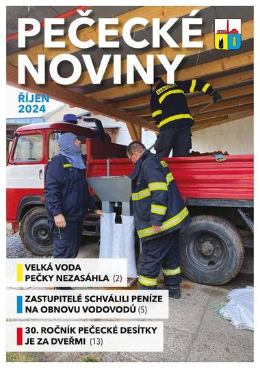


2023
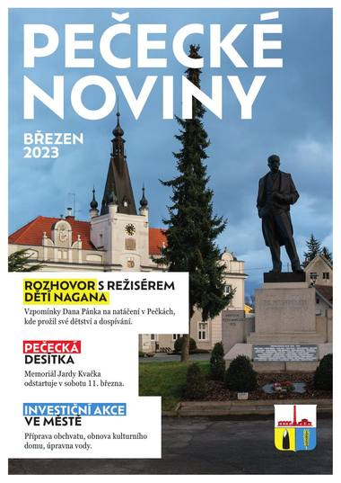

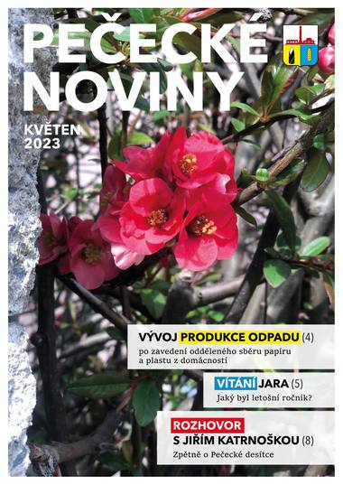

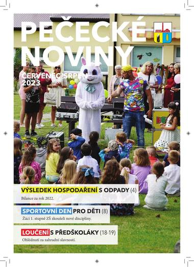


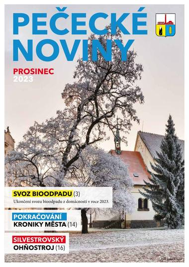
2022
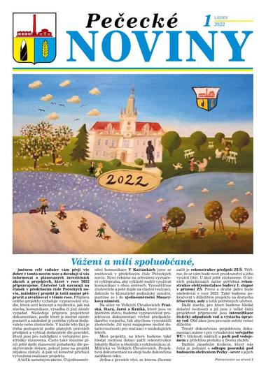


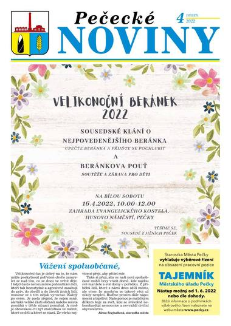
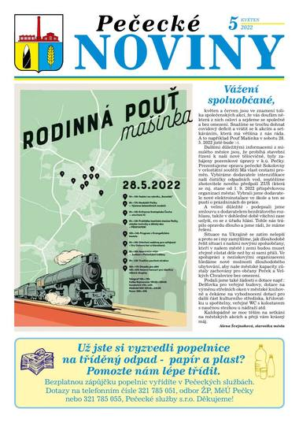
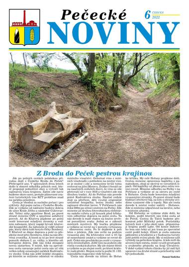
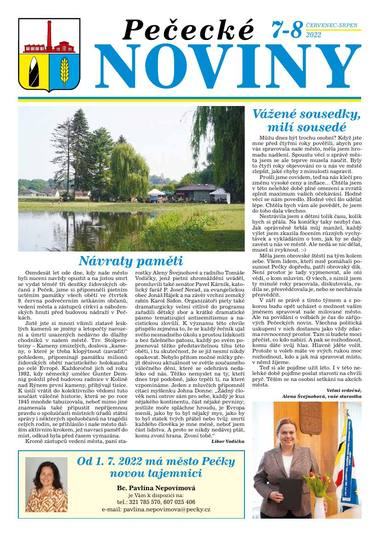
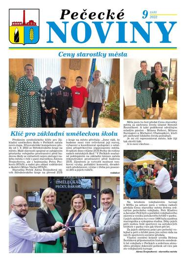

2021
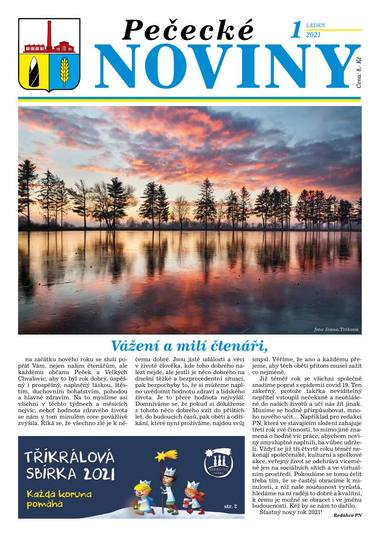
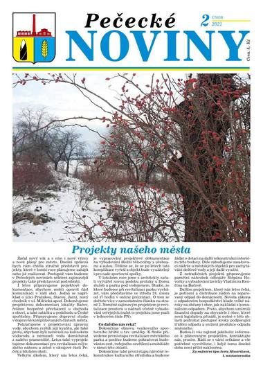
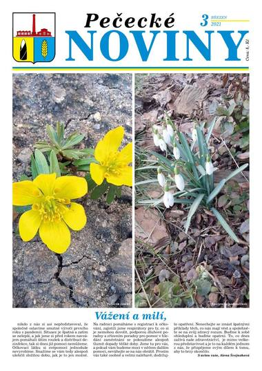
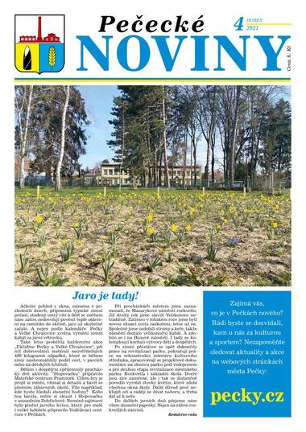
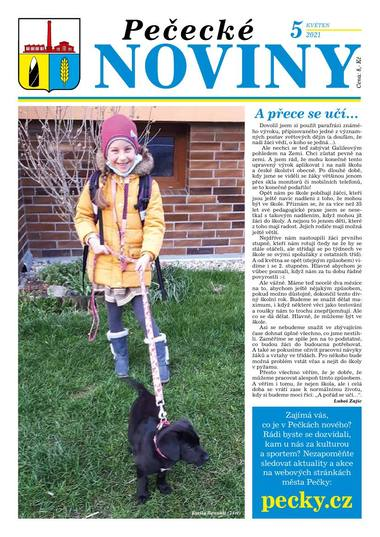
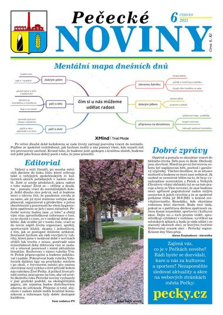

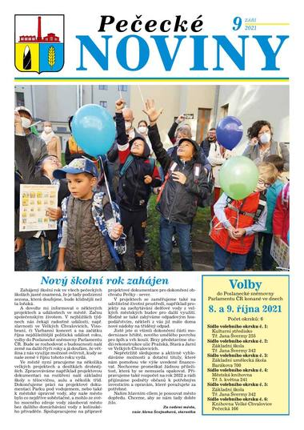
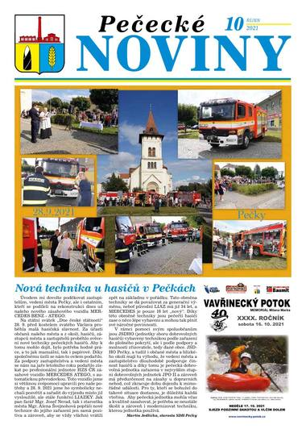
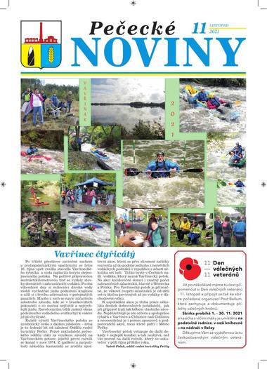

2020
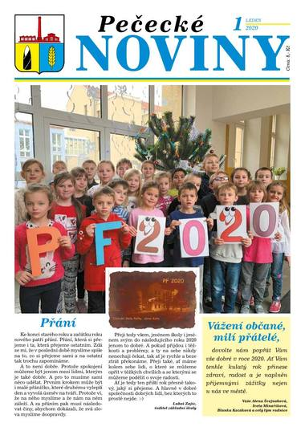
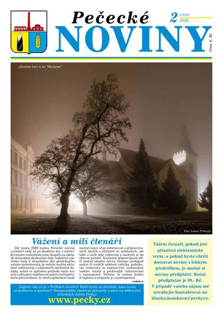


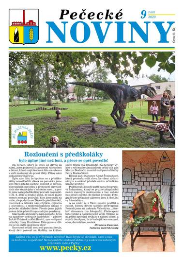

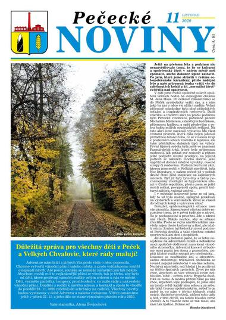
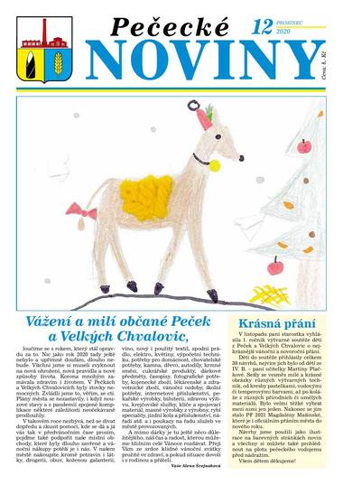
Transparentnost dat
O webu
pecky.online je neoficiální, nezávislý občanský projekt. Cílem je zpřehlednit veřejně dostupné informace o samosprávě města Pečky.
| Sekce | Zdroj | Stav |
|---|---|---|
| Základní fakta o městě | Wikipedie, oficiální web města | ověřeno |
| Výsledky voleb 2022 | ČSÚ — otevřená data (volby.gov.cz), křížově ověřeno se Seznam Zprávy | ověřeno |
| Volební programy 2022 | Pečecké noviny 9/2022 (inzerce), u 2 uskupení přepis OCR | ověřeno |
| Fulltext v Pečeckých novinách | 68 PDF 2020–2026, text extrahován (pdftotext) | ověřeno |
| Jmenný seznam zastupitelstva (na stránce Lidé) | pecky.cz — Složení ZM (21/21 členů) | ověřeno |
| Fotografie zastupitelů (13/21) | ods.cz — oficiální kandidátka (6), Pečecké noviny 9/2022 — inzerce NAŠE PEČKY (7) | ověřeno |
| Složení rady (7 členů) a povolební koalice | usnesení ustavujícího zasedání ZM 7/2022, mesto-pecky.usneseni.cz | ověřeno |
| Jednání a usnesení | mesto-pecky.usneseni.cz (export 281 jednání / 2 731 usnesení) | ověřeno |
| Smlouvy | Hlídač státu (konektor, statický výřez: 180 smluv / 102,4 mil. Kč, skupina celkem) | ověřeno |
| Žádosti dle zákona 106/1999 Sb. | — | nedohledáno |
| Pečecké noviny | pecky.cz — archiv PDF zpravodaje (68/68 vydání, 2020–2026) | ověřeno |